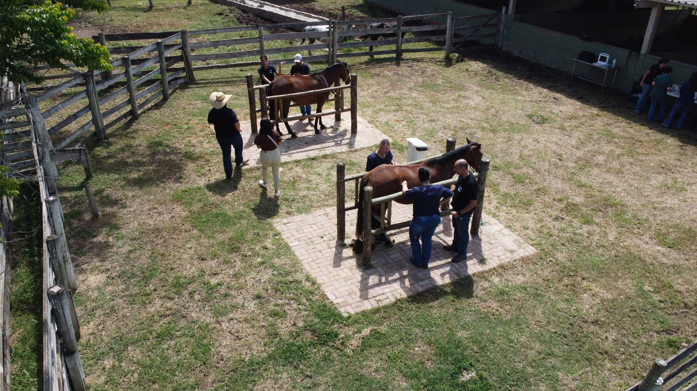
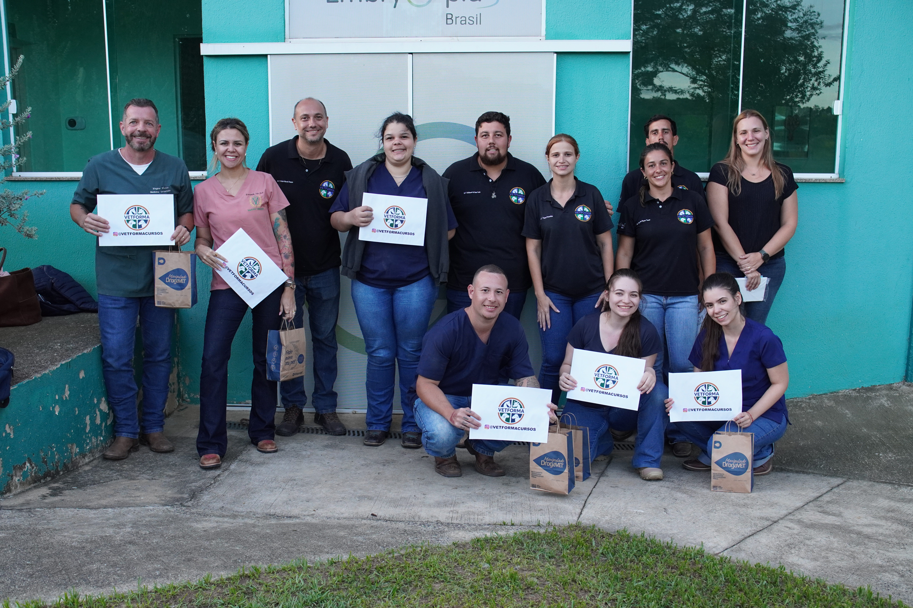
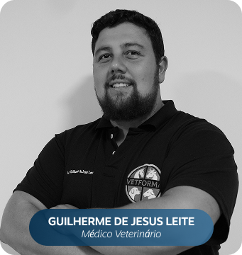
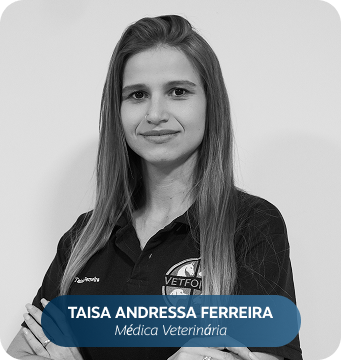
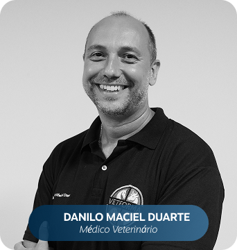

Aprendizado prático em fazenda escola Contato direto com animais e rotina real de trabalho.
Formação veterinária com prática real em campo.
Na Vetforma, o conhecimento sai da teoria e ganha vida dentro da fazenda. Cursos práticos para quem quer segurança, técnica e experiência verdadeira na área veterinária.
Profissionais que vivem o que ensinam Cursos ministrados por veterinários atuantes.
Ensino técnico com foco em segurança profissional. Mais confiança para atuar no campo.
Turmas com acompanhamento próximo Experiência personalizada.

Formação veterinária prática que prepara para o mercado real
Na Vetforma, acreditamos que a formação veterinária precisa ir além da sala de aula. Nossos cursos veterinários práticos são desenvolvidos para transformar teoria em experiência real, preparando estudantes e profissionais para atuar com mais segurança, técnica e confiança no campo.
Cada treinamento combina conhecimento técnico com vivência prática em fazenda escola, criando uma jornada completa de capacitação veterinária prática.

O objetivo não é apenas ensinar conteúdos, mas desenvolver habilidades que o mercado exige diariamente na pecuária e na área pet.
Nossa metodologia valoriza o aprendizado ativo, onde o aluno participa, executa e aprende diretamente com profissionais que vivem a rotina da medicina veterinária.

Ensino veterinário prático
em ambiente de campo
Um dos grandes diferenciais da Vetforma é a experiência em fazenda escola veterinária, onde o aprendizado acontece em contato direto com diferentes espécies e rotinas reais de manejo.
Esse ambiente proporciona uma formação veterinária prática mais completa, permitindo que o aluno desenvolva habilidades técnicas em situações reais, com acompanhamento profissional e estrutura preparada para ensino.
Ao vivenciar o clima do campo e os desafios da profissão, o aluno amplia sua visão técnica e se prepara para atuar com excelência em diferentes áreas da medicina veterinária.
Saiba mais

Capacitação veterinária que
transforma teoria em prática
Na Vetforma, o aprendizado acontece em ambiente real de fazenda escola, desenvolvendo técnica, prática e segurança profissional por meio de formações veterinárias focadas na evolução de carreira.
Saiba mais
Capacitação veterinária online
Os cursos online da Vetforma oferecem conteúdo técnico claro e acessível, conectando teoria e prática para fortalecer habilidades profissionais e apoiar sua evolução na medicina veterinária.
Saiba maisFormar profissionais mais seguros, preparados e confiantes para o mercado veterinário.






Perguntas frequentes
Sim. As atividades acontecem em fazenda escola, com contato direto com os animais e acompanhamento de veterinários atuantes durante toda a formação.
Sim. Todos os participantes recebem certificado de conclusão ao final do curso.
O valor varia conforme o curso e a carga horária. Entre em contato pelo WhatsApp para receber as condições da turma atual.